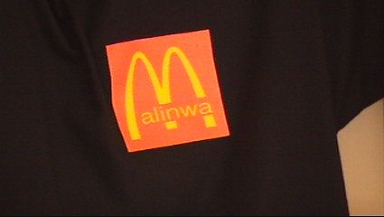
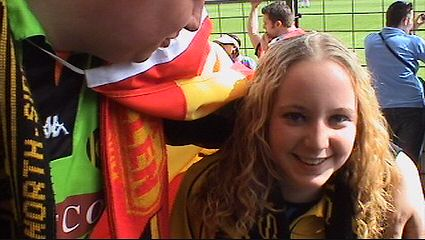

|
KV Mechelen - FC Nieuwkerken Waasland (1-1) 25 april 2004 |
Poging tot stoer kijken met de Mechelen-buff op de kop.
Op de markt in Mechelen waar flink gerestaureerd wordt.
Snel door naar de Rommelpot.
Bijna goed....

Juist, en nu een Jupiler!
Enige troost voor deze jongeman met SV.
De Jupiler-league.
Toegangsprijs € 9.
Twee Mechelenmeëdsjes.

Een van de vele artikelen uit de fanshop.
Het sfeervak is een kwartier voor de aftrap afgeladen vol.
We herkennen onder meer Koffieboer en Iceman.
Veel sfeer!
Na een dikke minuut staat het al 1-0 door een doelpunt van
Vonasek.
Achter de goal is er een "wodka-party".

KB in actie als Rodameëdsjes-scout.
Deze gastvrouw deelde de programmaboekjes uit.
100 jaar KV Mechelen!!!
Spandoeken van "The Originals".
Even rusten op de bierbegraafplaats.
Aj, in de 63e minuut geschiedt het onheil: Jacobs scoort de
gelijkmaker.
Mooie sjaal!
Na het eindsignaal moest er nog 5 minuten gewacht worden
aleer de
"veldbestorming" kon beginnen.
Skybox.
De veiligheidspal zit er NOG op....
I*G*N*I*T*I*O*N
De Olympische vlam wordt overgedragen....

Stemmig rood.
"Beter verre vrienden dan slechte buren". Bij deze wijsheid
sluiten wij ons
aan!